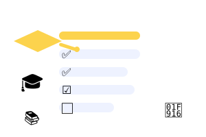

Criação de Slides com IA, Inclusão e Gestão da Sala de Aula Digital — da Educação Infantil ao Ensino Médio, com foco em AEE e comportamento.

Capacitar educadores a produzir materiais didáticos com Inteligência Artificial em minutos, adaptá-los para a inclusão escolar (AEE, TEA, TDAH, deficiência intelectual) e usar a IA como aliada na gestão do comportamento e do engajamento de turmas desafiadoras — com exemplos concretos e prompts prontos para a realidade do professor brasileiro.
Ao final do curso, o professor-cursista terá um conjunto de materiais próprios — apresentações, versões acessíveis, avaliações e combinados — e uma rotina de trabalho em que a IA acelera a produção de conteúdo sem roubar o protagonismo pedagógico. O objetivo não é "ensinar a usar ferramentas", e sim resolver problemas reais de sala de aula com elas.
Ao longo dos 4 módulos, você será capaz de:
| Módulo | Tema | Descrição |
|---|---|---|
| 1 | Fundamentos e criação de slides rápidos com IA | Gamma, Canva, Tome e ChatGPT para produzir apresentações em minutos |
| 2 | Educação Especial, Inclusão e AEE | CAA, pictogramas, Easy Read e design anti-sobrecarga sensorial |
| 3 | IA na prática escolar e engajamento dos alunos | IA como tutora, ética, detectores e avaliações à prova de IA |
| 4 | Gestão de sala de aula e alunos rebeldes/desengajados | Dinâmicas, 3 níveis na mesma turma e combinados em slides |
| 5 | Educação Financeira no Ensino Médio (Bloco 1) | Vida familiar, social e bens pessoais — orçamento e consumo consciente |
| 6 | Nanotecnologia — abordagem para o Ensino Médio | Escala nano, propriedades, aplicações, riscos e ética (interdisciplinar) |
| ⚡ | Deck FINANÇAS e deck NANO (biblioteca de slides) | Apresentações prontas para projetar em sala |
| ⚡ | Banco de prompts prontos (copiar e colar) | Prompts organizados por tema para usar em qualquer IA |
O curso pode ser oferecido em três formatos, adaptando-se à realidade de cada escola, secretaria ou grupo de professores:
O curso foi desenhado para quem vive a sala de aula e quer usar a tecnologia a favor do ensino — sem precisar ser especialista em computação. Você só precisa de um computador ou celular com acesso a um chatbot de IA gratuito:
Todas as ferramentas do curso têm versão gratuita — e o curso mostra como aproveitá-las ao máximo sem pagar nada. Para professores, muitas plataformas oferecem ainda mais recursos:
💡 Sem internet na sala de aula? Não tem problema: o curso ensina o fluxo "roteiro com IA em casa + PowerPoint offline na escola", além de oferecer o Laboratório do Professor, que funciona 100% offline no navegador.
A avaliação é 100% prática e baseada em entregas que o professor já vai produzir durante o curso — nada de prova teórica. Cada entrega vale como material real para usar em sala:
Ao final, cada participante monta seu portfólio de professor do futuro: um conjunto de materiais prontos — slides, versões acessíveis, rubricas e combinados — que pode ser usado imediatamente e compartilhado com a equipe da escola.
O curso segue um ciclo de quatro etapas, repetido em cada módulo para fixar a prática:
💡 Dica de estudo: você não precisa fazer tudo de uma vez. Escolha uma entrega por semana, aplique em sala e volte ao módulo para aprofundar. O curso foi desenhado para ser percorrido no seu ritmo.